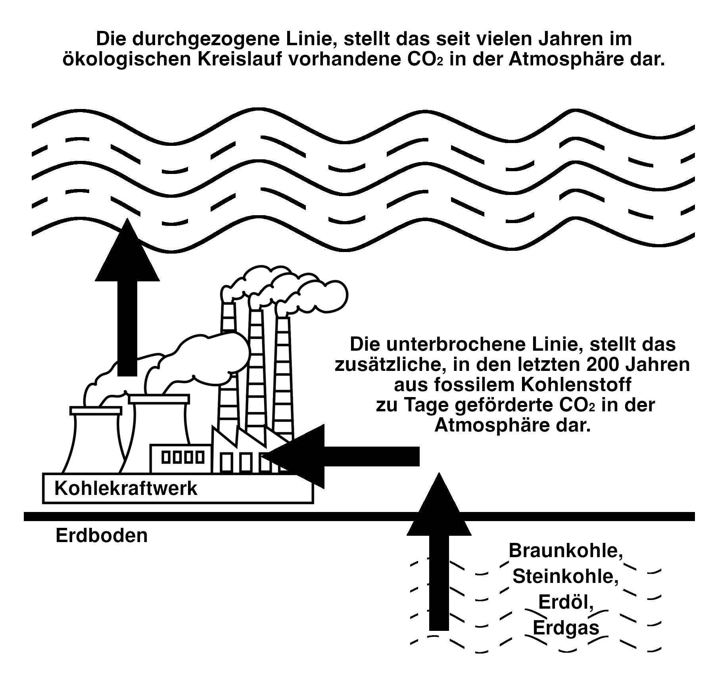

Zusammenfassung
- Fossiles CO₂ ist klimaschädlich – Wissenschaftlicher Konsens (IPCC)
- Das 2°C-Ziel ist gesetzlich verankert – Pariser Abkommen, KSG
- Das CO₂-Budget für 1,5°C ist aufgebraucht – jede weitere Emission erfordert eine Entfernung (PIK, Copernicus, 3-Jahres-Ø > 1,5°C)
- Notwendigkeit von Carbon-Removal seit 2015 bekannt - Seit dem Pariser Abkommen 2015 und dem IPCC-Bericht 2018 ist Carbon-Removal wissenschaftlich notwendig, um nach einem Overshoot die Temperatur wieder zu senken und Kipppunkt-Kaskaden zu vermeiden (IPCC AR6, PIK, Tipping Points, duration matters)
- Das BVerfG hat die Generationengerechtigkeit als Verfassungsprinzip bestätigt – Lastenverschiebung auf künftige Generationen verletzt deren Freiheitsrechte (BVerfG 1 BvR 2656/18)
- Daraus folgt eine verfassungsrechtliche Verpflichtung zu 1,5°C und Carbon-Removal – nicht nur politisches Ziel, sondern Schutzpflicht (Art. 2 Abs. 1 GG i. V. m. Art. 20a GG)
- CO₂-Emissionen sind 1:1 zuzuordnen – jede genehmigte Tonne erzeugt eine konkrete Entfernungspflicht (Climate Trace, Map, Ariadne)
- Carbon-Removal-Kosten sind bezifferbar – 388-500 €/t (PIK BVerfG), Marktpreise 600-1.200 €/t
- Genehmigungen dürfen keine erheblichen Nachteile verursachen - Genehmigungsbedürftige Anlagen sind so zu errichten, dass keine erheblichen Nachteile für die Allgemeinheit hervorgerufen werden können (§ 5 Abs. 1 BImSchG), Abs. 2 besagt, dass Vorsorge getroffen werden muss (§ 5 Abs. 2 BImSchG).
- Haushaltsgrundsätze verlangen Ausweis aller absehbaren Verbindlichkeiten – unabhängig von gesetzlicher Zahlungspflicht (§§ 7, 11, 17 BHO/LHO)
- Rückstellungspflicht gilt auch bei ungewissen Verbindlichkeiten – § 249 HGB, Analogie zu Pensionen, Renaturierung, Atommüll
- Betreiber verstoßen nicht gegen Verwaltungsrecht – sie haben Genehmigungen (z. B. GuD Altbach/Deizisau, GuD Eschweiler)
- Sind die Behörden verantwortlich? - Staatsanwaltschaften bestätigen, dass die Betreiber nicht verantwortlich sind, da sie Genehmigungen haben (Kleve, Mosbach, Leipzig, Rostock, Bayreuth 1 / Seite 2). Entsprechend obliegt es den Genehmigungsbehörden bzw. deren Regierungsbezirken, die Verantwortung für die Verbindlichkeiten zu übernehmen, mit denen ihre Steuerzahler belastet werden.
- Nirgends werden diese Kosten ausgewiesen – weder im Bundeshaushalt noch in Landeshaushalten (Stuttgart, Köln, Düsseldorf), noch in UVP-Verfahren (UVP), noch in Genehmigungen (Genehmigungsbescheid). Auch das TEHG oder das UVPG beachten diese Kosten bisher nicht (Düsseldorf). Die Kosten entstehen aber und sind reale Verbindlichkeiten.
Die Struktur- und Genehmigungsdirektion Nord (Koblenz/Rheinland-Pfalz) bestätigt, dass Vorhaben, mit nur geringen klimawirksamen Emissionen, nicht betroffen sind. - Zu klären ist, wer die Ausweispflicht trägt – Genehmigungsbehörden? UVP-Stellen? Bund? Land? Finanzministerium?
- Vermögensschaden - Vermögensschaden kann bereits in der Begründung einer Verbindlichkeit liegen (BGHSt 21, 384, 385 - Provisionsvertreter-Fall; BGHSt 16, 220; BGHSt 23, 300).
- Das systematische Verschweigen begründet (hoffentlich) den Anfangsverdacht der Untreue oder des Betrugs – unabhängig davon, wer letztlich verantwortlich ist (§ 266 StGB, § 263 StGB).
{kind=link}
Beispiel 2 - GuD Weisweiler verursacht 2.040.000 t/Jahr CO₂-Emissionen » 2 Milliarden €/Jahr Carbon-Removal-Kosten » 20 Mrd. € Vermögensschaden für Kölner Kinder allein aus diesem einen Kraftwerk (Zulassung, FragDenStaat)
Für die Hälfte der Kosten könnte man mit Solar & Wind die 20-fache Überkapazität schaffen, was selbst bei "Dunkelflauten" ganz ohne Speicher noch 3-5 mal mehr Leistung als diese Kraftwerke bei Vollast liefern würde.
1. Carbon-Removal im Haushalt
Das gesetzliche 1,5°C-Ziel ist erreicht. Das CO₂-Budget ist verbraucht. Jede weitere CO₂-Emission muss durch Carbon-Removal wieder entfernt werden.
Jede weitere CO₂-Emission verursacht reale Verbindlichkeiten. Nicht die Gesetze haben sich geändert, sondern die Natur. Die CO₂-Mengen werden weltweit getrackt (z. B. auf climatetrace.org) und Deutschland wird diese Carbon-Removal-Kosten bezahlen oder die Entfernung durchführen müssen. Die Politik verlangt per Gesetz (§ 7, § 8 BHO/LHO) einen vollständigen und wahren Haushalt, und es obliegt den Verwaltungs- und Genehmigungsbehörden sich daran zu halten.
Nach dem IPCC-Sachstandsbericht AR6 beinhaltet das offizielle 1,5°C-Ziel einen unvermeidlichen "Temperature Overshoot" - Deutschland wird die 1,5°C-Schwelle temporär überschreiten und kann nur durch massive Carbon-Removal-Maßnahmen wieder darunter zurückkehren.
Jede heute genehmigte CO₂-Emission muss künftig durch Carbon-Removal ausgeglichen werden. Diese Kosten sind daher bereits entstehende Verbindlichkeiten, die nach § 8 BHO/LHO auszuweisen sind.
Wichtig: Es geht hier ausschließlich um direkt zurechenbare, individuelle Carbon-Removal-Kosten - nicht um anteilige oder gemeinsam verursachte Klimafolgekosten. Jede emittierte Tonne CO₂ muss einzeln wieder entfernt werden (1:1-Zuordnung). Andere Klimaschäden sind zur Klarstellung in Anhang 6 separat aufgelistet.
2. Verfassungsrechtliche Verpflichtung zu Carbon-Removal
Das Bundesverfassungsgericht hat festgestellt, dass der Gesetzgeber verpflichtet ist, die nach 2030 erforderlichen Reduktionsmaßnahmen rechtzeitig festzulegen, um einen "freiheitsschonenden Übergang" zu ermöglichen (BVerfG 1 BvR 2656/18, Rn. 195). Der IPCC-Sachstandsbericht AR6, auf den sich das BVerfG stützt, stellt fest: Bei Fortsetzung der derzeitigen Emissionstrends ist Carbon Dioxide Removal zwingend erforderlich, um nach einem temporären Überschreiten ("Overshoot") wieder auf 1,5°C zurückzukehren.
Jedes weitere genehmigte Gaskraftwerk schafft zum Zeitpunkt der Genehmigung die Verbindlichkeit, das gesamte über die Laufzeit erzeugte CO2 aus fossilem Kohlenstoff 1:1 wieder zu entfernen.
Diese wissenschaftliche Erkenntnis ist keine politische Meinung, sondern Grundlage der verfassungsgerichtlichen Rechtsprechung.
Deutschland hat seine Emissionen seit 1990 um etwa 40% reduziert - global stiegen die Emissionen im gleichen Zeitraum um über 60%. Bei diesem Trend ist Carbon-Removal faktisch unausweichlich.
Die verfassungsrechtliche Verpflichtung zu Carbon-Removal löst die haushaltsrechtliche Ausweispflicht aus. Nach § 17 Abs. 2 BHO/LHO sind bei mehrjährigen Maßnahmen die "voraussichtlichen Gesamtkosten" darzulegen. Diese Pflicht gilt nicht erst bei gesetzlich festgelegten Zahlungspflichten, sondern bereits bei wirtschaftlich unvermeidbaren Folgekosten.
Vergleichbar sind:
- Pensionsrückstellungen (ausgewiesen, obwohl künftige Regierungen das System ändern könnten)
- Renaturierungskosten bei Steinbrüchen (ausgewiesen ab Genehmigung, nicht erst bei Stilllegung)
- Atommüll-Endlagerkosten (ausgewiesen, obwohl Endlager noch nicht existiert)
Zur Schwere der Pflichtverletzung: Das Bundesverfassungsgericht hat festgestellt, dass die Verschiebung von Emissionslasten in die Zukunft die Freiheitsrechte künftiger Generationen verletzt (1 BvR 2656/18, Rn. 183, 192). Die hier gerügte Nichtausweisung von Verbindlichkeiten ist eine solche verfassungswidrige Lastenverschiebung.
3. Verstoß gegen Haushaltsgrundsätze
Die verfassungsrechtliche Verpflichtung zu Carbon-Removal begründet nach § 17 Abs. 2 BHO die Pflicht, die "voraussichtlichen Gesamtkosten" zu ermitteln und auszuweisen.
Konkret am Beispiel für GuD Altbach/Deizisau:
- CO₂-Emissionen: 1.275.000 t/Jahr
- Carbon-Removal-Kosten: 637.500.000 €/Jahr (bei 500 €/t)
- Über 20 Jahre: 12,75 Mrd. € nicht bilanziert
Das systematische Verschweigen dieser Verbindlichkeiten verstößt gegen § 7, § 11 und § 17 BHO/LHO und erfüllt den Tatbestand der Untreue (§ 266 StGB).
Die Höhe der Verbindlichkeiten ist nicht spekulativ, sondern konkret nachvollziehbar:
- PIK-Studie ermittelt 388-500 €/t als konservative Schätzung
- Carbon-Removal kann bereits heute von Anbietern wie Climeworks, Carbon Engineering oder Carbfix erworben werden. Aktuelle Marktpreise liegen bei 600-1.200 €/t.
Die Verbindlichkeit entsteht mit der Emission, nicht erst mit der Fälligkeit. Dies entspricht dem handelsrechtlichen Grundsatz der periodengerechten Zuordnung (§ 252 Abs. 1 Nr. 5 HGB): Aufwendungen sind dem Geschäftsjahr zuzurechnen, in dem sie verursacht werden.
Dass der Gesetzgeber die Fälligkeit dieser Verbindlichkeiten noch nicht geregelt hat, ändert nichts an ihrer Existenz. Nach § 249 Abs. 1 Satz 1 HGB sind Rückstellungen für ungewisse Verbindlichkeiten zu bilden, wenn die Verpflichtung dem Grunde nach besteht, aber nach Höhe oder Zeitpunkt ungewiss ist. Genau dies trifft auf Carbon-Removal-Kosten zu.
Hinzu kommt: Bei Überschreitung klimatischer Kipppunkte können selbstverstärkende Effekte eintreten, die den Entfernungsbedarf vervielfachen. Dies erhöht das Risiko, macht die Kosten aber nicht spekulativ – es unterstreicht vielmehr die Dringlichkeit der Ausweisung.
Subsidiarität gilt nicht bei Haushaltsgrundsätzen: Auch Pensionsverpflichtungen werden ausgewiesen, obwohl künftige Regierungen das Pensionssystem ändern könnten.
Abschließend: Die Stuttgarter Behörden haben mit der Genehmigung des GuD Altbach/Deizisau Verbindlichkeiten in Höhe von 12,75 Mrd begründet, ohne diese auszuweisen.4. Völkerrechtliche Grundlagen
Carbon-Removal-Kosten entstehen unabhängig von nationaler Gesetzgebung
Deutschland haftet völkerrechtlich für seine überproportionalen CO₂-Emissionen nach dem Verursacherprinzip (Rio-Deklaration 1992, Prinzip 16). Deutsche Pro-Kopf-Emissionen liegen etwa doppelt so hoch wie der globale Durchschnitt. Würden alle Länder auf deutschem Niveau emittieren, läge die globale Erwärmung bei über 3 Grad.
Diese völkerrechtliche Verpflichtung existiert unabhängig vom Klimaschutzgesetz. Das KSG § 13 Abs. 1 erkennt sie lediglich an. Das Bundesverfassungsgericht hat mit Beschluss vom 24.03.2021 (1 BvR 2656/18) die Generationengerechtigkeit als Verfassungsprinzip bestätigt und die Pflicht zur Vermeidung unzumutbarer Lasten für künftige Generationen betont.
Beweislastumkehr nach § 17 Abs. 2 BHO/LHO
Nach § 17 Abs. 2 BHO/LHO obliegt es den Amtsträgern, die voraussichtlichen Gesamtkosten darzulegen. Sie hätten nachweisen müssen, dass Deutschland NICHT international für seine Emissionen haftet. Dieser Nachweis fehlt in allen Genehmigungsunterlagen.
5. Haushaltsrechtliche Grundlagen
| § 7 BHO/LHO Haushaltswahrheit: | "Der Haushaltsplan muss wahr und klar sein" |
| § 8 BHO/LHO Haushaltsvollständigkeit: | "Alle voraussehbaren Ausgaben sind auszuweisen" |
| Bundes-Klimaschutzgesetz § 1: | Klimaneutralität bis 2045 (gesetzlich bindend) |
| BVerfG-Urteil 24.03.2021: | Generationengerechtigkeit als Verfassungsprinzip |
| PIK-Studie 2025: | Carbon-Removal-Kosten 388 €/t CO₂ (wissenschaftlicher Konsens) |
1,5°C-Ziel als bindende Verpflichtung
Auch wenn das Pariser-Abkommen/KSG nur „deutlich unter 2 Grad" fordert, ist das 1,5°C-Ziel rechtlich bindend:
- Deutschlands Anteil am globalen Klima ist beträchtlich höher als der Durchschnitt. Würden alle anderen Länder auf die gleiche pro-Kopf Emission wie Deutschland gelangen, läge die globale Temperatur weit über 3 Grad – mit katastrophalen Kippunkt-Kaskaden.
- Solange die internationale Rechtsordnung Annerkennung findet, sind alle weiteren CO₂-Emissionen in Deutschland auch von Deutschland entweder wieder zu entfernen oder deren Entfernung zu finanzieren.
- Wissenschaftlich gesehen ist nicht das KSG bindend, sondern die Rückkehr zu 1,5 Grad. Eine dauerhafte Überschreitung hat Kaskaden von Kippunkten zur Folge.
- Eine sofortige Investition entsprechend den aktuellen Kosten in Carbon-Removal-Technologie ist alternativlos (gleichzeitig eine Chance für Deutschland als Weltmarktführer).
6. Strafrechtliche Dimension
Das systematische Verschweigen begründet den Anfangsverdacht der Untreue oder Betrug – unabhängig davon, wer letztlich verantwortlich ist (§ 266 StGB, § 263 StGB).
| Vermögensbetreuungspflicht: | Amtsträger im Haushaltswesen haben eine Vermögensbetreuungspflicht nach den Haushaltsgrundsätzen (§ 7 HGrG, § 8, § 11 und § 17 BHO/LHO) |
| Pflichtverletzung: | Systematisches Verschweigen von Verbindlichkeiten verstößt gegen § 8 BHO/LHO (Haushaltswahrheit), § 11 Abs. 2 BHO/LHO (Vollständigkeit) und § 17 Abs. 2 BHO/LHO (Ausweis der Gesamtkosten) |
| Vermögensnachteil: | Carbon-Removal-Kosten stellen bezifferbare Verbindlichkeiten dar, die den Haushalt belasten |
| Besonders schwerer Fall: | § 266 Abs. 2 StGB i.V.m. § 263 Abs. 3 Satz 2 Nr. 2 StGB: Amtsträgermissbrauch und Vermögensverlust großen Ausmaßes |
Vermögensschaden durch Begründung von Verbindlichkeiten
Nach BGH-Rechtsprechung kann der Vermögensschaden bereits in der Begründung einer Verbindlichkeit liegen (BGHSt 21, 384, 385 - Provisionsvertreter-Fall; BGHSt 16, 220; BGHSt 23, 300). Das BVerfG hat klargestellt, dass der Vermögensschaden konkret zu beziffern ist (BVerfGE 126, 170, 211 f.).
Betrug gegenüber künftigen Generationen (§ 263 StGB)
Die Verwaltungsbehörden betrügen systematisch künftige Generationen durch Verschweigen der wahren Kosten heutiger Entscheidungen.
| Täuschung: | Verschweigen der Carbon-Removal-Verbindlichkeiten in Haushaltsplänen und Genehmigungsverfahren |
| Irrtum: | Künftige Generationen und heutige Entscheidungsträger gehen von niedrigeren Kosten aus |
| Vermögensschaden: | Künftige Generationen müssen die verschlechterten Verbindlichkeiten übernehmen (Milliarden-Kosten) |
| Bereicherungsabsicht: | Heutige Verwaltung spart kurzfristig Ausgaben durch Nichtausweisung der echten Kosten, anstatt in nachhaltige Konzepte zu investieren nur weil deren unmittelbare Investitionskosten kurzfristig niedriger ausfallen |
Intergenerationeller Betrug
Das systematische Verschweigen von Carbon-Removal-Kosten ist ein Betrug gegenüber künftigen Generationen: Die heutigen Verwaltungsbehörden bereichern sich durch gesparte Haushaltsausgaben, während sie die wahren Kosten an künftige Generationen weiterreichen. Dies erfüllt alle Tatbestandsmerkmale des Betrugs (§ 263 StGB).
Bereicherung der Gegenwart auf Kosten der Zukunft: Durch das Verschweigen der Verbindlichkeiten können heute niedrigere Steuern erhoben oder andere Ausgaben getätigt werden – die Rechnung zahlen unsere Kinder und Enkel.
Grenze zur strafrechtlichen Relevanz
Bei Verbindlichkeiten in Höhe von Hunderten Millionen bis Milliarden Euro kann nicht mehr von "Ermessensspielraum" oder "vertretbarer Auslegung" gesprochen werden. Das systematische Verschweigen solcher Summen gegenüber Entscheidungsträgern und Öffentlichkeit überschreitet die Grenze zur strafrechtlichen Relevanz.
7. Empfohlenes Vorgehen
- Vollständige CO₂-Bilanz erstellen inklusive aller Senken und bereits finanzierter Projekte
- Verbleibende Netto-Carbon-Schuld berechnen (Emissionen minus Senken minus bereits finanzierte Projekte)
- Haushaltszeile ergänzen: "Verbindlichkeit Carbon-Removal"
8. Vollständige Bilanzierung
9. Typische CO₂-Verursacher und Carbon-Removal-Kosten
Nur fossile CO₂-Emissionen durch Verbrennung fossiler Brennstoffe vor Ort (keine indirekten Emissionen über Stromverbrauch, keine biogenen Emissionen)
| Anlage/Bereich | CO₂-Emissionen/Jahr | Carbon-Removal-Kosten/Jahr |
|---|---|---|
| BHKW Kommune (10 MW, Erdgas) | 14.000 t | 5.432.000 € |
| Chemiefabrik (fossile Verbrennungsprozesse) | 80.000 t | 31.040.000 € |
| Flughafen (Kerosin-Verbrennung) | 150.000 t | 58.200.000 € |
| Energierecycling / Plastik-Müllverbrennung | 280.000 t | 108.640.000 € |
| Stahlwerk (Koks/Kohle, 1 Mio. t Stahl/Jahr) | 500.000 t | 194.000.000 € |
| Zementwerk (Kalkstein + fossile Brennstoffe, 1 Mio. t/Jahr) | 650.000 t | 252.200.000 € |
| Gaskraftwerk (Erdgas, 500 MW) | 800.000 t | 310.400.000 € |
| Kohlekraftwerk (Kohle, 1.000 MW) | 5.000.000 t | 1.940.000.000 € |
Praktische Umsetzung
Für die genaue Berechnung sollte man sich ein Angebot von Carbon-Removal-Anbietern einholen:
- Climeworks - Weltmarktführer, sofort verfügbar (Preis auf Anfrage)
- Heirloom Carbon - 320.000t/Jahr Kapazität, operative Anlagen (Preis auf Anfrage)
- Spiritus Technologies - Zielpreis unter $100/t CO₂ (in Entwicklung)
- CarbonCapture Inc. - Modulare Systeme ab 2025 (Preis auf Anfrage)
Die Gelder sollten dann entsprechend verplant und ausgegeben werden.
Warum biogene CO₂-Emissionen nicht relevant sind
Biogene CO₂-Emissionen (aus Tierhaltung, Klärwerken, biogenem Müll) entstehen aus kurzfristigen biologischen Kreisläufen und sind daher von der Carbon-Removal-Verpflichtung ausgenommen:
- Methan aus Tierhaltung: Entsteht aus pflanzlicher Biomasse, die zuvor CO₂ aus der Atmosphäre gebunden hat (geschlossener Kreislauf über 10-20 Jahre)
- Klärwerke: CO₂/Methan aus organischen Abfällen, die ebenfalls aus dem aktuellen Kohlenstoffkreislauf stammen
- Müllverbrennung (biogener Anteil): Papier, Holz, Bioabfälle sind Teil des natürlichen Kohlenstoffkreislaufs
- Ausnahme - Plastik-Müllverbrennung: Kunststoffe basieren auf fossilen Rohstoffen (Erdöl/Erdgas) und erzeugen daher fossile CO₂-Emissionen, die Carbon-Removal-pflichtig sind
Nur fossile Emissionen fügen der Atmosphäre "neuen" Kohlenstoff hinzu, der über Millionen Jahre gebunden war. Diese müssen daher 1:1 durch Carbon-Removal wieder entfernt werden.
10. CO₂-Kreislauf vs. CO₂ aus fossilem Kohlenstoff

Kein Kreislauf:

Abgrenzung zu CO₂-Zertifikaten (BEHG)
Die CO₂-Bepreisung nach dem Brennstoffemissionshandelsgesetz (BEHG) dient der Emissionsreduktion und deckt Carbon-Removal-Kosten nicht ab.
📺 Empfohlene Hintergrund-Videos bei Interesse
11. Deutschland's Klimaverantwortung – Die Zahlen
Wo stehen wir heute?
Davon sind 1.141 Gt zusätzlich seit 1750
Das sind 273 Jahre kumulierte Emissionen
Deutschland's historischer Fußabdruck
Pro-Kopf-Verantwortung
Der historische Überschuss
Was für eine gerechte Verteilung nötig wäre
Deutschland müsste entfernen:
| Menge | Zeitrahmen | Kosten pro Jahr | % des BIP |
|---|---|---|---|
| 51,8 Gt CO₂ | Über 30 Jahre | 1.036 Mrd. USD/Jahr | 24% |
| 51,8 Gt CO₂ | Über 50 Jahre | 622 Mrd. USD/Jahr | 14% |
| 51,8 Gt CO₂ | Über 100 Jahre | 311 Mrd. USD/Jahr | 7% |
Kosten basierend auf Direct Air Capture mit 600 USD/t CO₂
Der realistische Umsetzungsplan
Phase 1 (2025-2035): Transformation
Emissionen runter + Start CO₂-Entfernung
- Emissionsreduktion von 8,0 auf 1,3 t CO₂/Kopf (84%)
- Kohleausstieg bis 2030
- 100% erneuerbare Stromversorgung bis 2035
- Aufbau erster DAC-Anlagen: 100 Mio. t/Jahr Kapazität
- Kosten: ~3% BIP/Jahr
Phase 2 (2035-2050): Hochlauf
Skalierung der CO₂-Entfernung
- Deutschland ist klimaneutral (1,3 t/Kopf)
- Ausbau auf 1.000 Mio. t CO₂-Entfernung pro Jahr
- Mix: DAC (50%), Aufforstung (30%), Bodenspeicher (20%)
- Kumulativ entfernt: 8,2 Gt CO₂
- Kosten: ~3,5% BIP/Jahr
Phase 3 (2050-2100): Vollständiger Ausgleich
Historische Verantwortung übernehmen
- Verbleibende 43,5 Gt CO₂ entfernen
- Pro Jahr: 871 Mio. t CO₂
- Technologie ist deutlich günstiger geworden
- Kosten: ~2% BIP/Jahr
- Deutschland ist bis 2100 klimagerecht
Gesamtkosten im Überblick
Historische Transformationen im Vergleich
| Transformation | Zeitraum | Kosten | % BIP/Jahr |
|---|---|---|---|
| Marshall-Plan | 4 Jahre (1948-1952) | 140 Mrd. USD | ~5% |
| Deutsche Wiedervereinigung | 30 Jahre (1990-2020) | 2.000 Mrd. EUR | 3-4% |
| Energiewende (bisherig) | 20 Jahre (2000-2020) | 500 Mrd. EUR | ~1,5% |
| Klimaverantwortung | 75 Jahre (2025-2100) | 7.000 Mrd. USD | 2,2% |
Finanzierung
- CO₂-Steuer schrittweise auf 200-300 €/t
- Abbau klimaschädlicher Subventionen (60 Mrd./Jahr)
- Vermögensabgabe (1-2% auf große Vermögen)
- Internationale Klimabonds
- EU-Klimafonds und gemeinsame Programme
Positive Nebeneffekte
• Export von DAC-Technologie weltweit
• Hunderttausende neue Jobs
• Energie-Unabhängigkeit
• Vorbild für andere Industrieländer
• Vertrauen vom Global South
• Diplomatisches Gewicht
• Weniger Hitzetote
• Geringere Flutschäden
• Höhere Lebensqualität
Fazit: Es ist machbar
Mit 2,2% des BIP über 75 Jahre kann Deutschland:
✓ Emissionen auf klimaverträgliches Niveau senken
✓ 51,8 Gt CO₂ historischen Überschuss entfernen
✓ Seiner historischen Verantwortung gerecht werden
✓ Eine Vorreiterrolle für andere Industrieländer einnehmen
Das ist weniger als wir für Verteidigung ausgeben.
Das ist der Preis für Gerechtigkeit.
Das ist der Preis für eine bewohnbare Zukunft.
Und ja: Da müssen wir durch.
Datenquellen: Global Carbon Project 2024, EDGAR 2024, Our World in Data, IPCC AR6, Nature Climate Change 2023
Berechnungsgrundlage: Kumulative CO₂-Emissionen seit 1750, territoriale Emissionen, Direct Air Capture Kosten (600 USD/t aktuell, sinkend mit Technologiefortschritt)
Stand: Dezember 2024